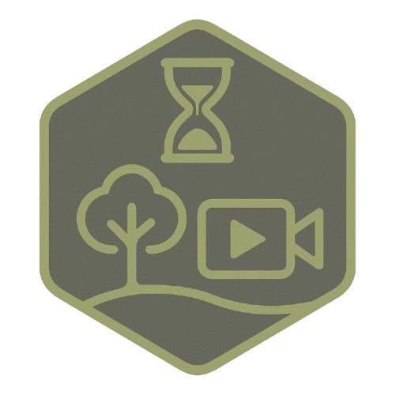

NATURA VIDEO ARCHIVER
NaturaVA
NaturaVA (Natura Video Archiver) is a large-scale video ingestion and management tool that performs de-duplication, tagging, and search across nature and wildlife archives.
INGEST // DEDUPE // TAG // SEARCH
Local wildlife video archive records
LOCAL VIDEOSHA-256 DEDUPETAGGINGJSON/CSV
Records0
Visible0
Exact duplicates0
Unique tags0
| Name | Duration | Dimensions | Tags | Species | SHA-256 |
|---|